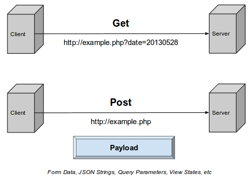
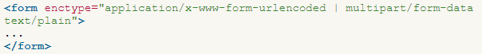

|
Формы, как элементы взаимодействия пользователя с сервером (тег «form»)
Формы представляют собой совокупность элементов ввода данных. Адресс по которому отправляются эти данные прописывается в атрибуте «action=’URL’» для тега «form». Предварительно браузер подготавливает информацию в виде пары «имя=значение», где имя определяется атрибутом «name» тега «input».
Метод (метод протокола HTTP), которым будут отправляться данные указывается с помощью атрибута «method». Существует два метода отправки данных:

Никогда не используйте GET при отправке паролей или другой конфиденциальной информации!
Атрибут «enctype». Определяет способ кодирования данных формы при их отправке на сервер. Обычно устанавливать значение атрибута «enctype» не требуется, данные вполне правильно понимаются на стороне сервера. Однако если используется поле для отправки файла (input type="file"), следует определить атрибут «enctype: ‘multipart/form-data’».

где "application/x-www-form-urlencoded" – значение по умолчанию.
Тег «input» используется для создания элементов для ввода данных и находится внутри формы. В данном теги есть атрибут «type» с различными значениями, которые определяют для чего используется тег «input».
Основные типы тега «input»
Тег «select» позволяет создать элемент интерфейса в виде раскрывающегося списка, а также список с одним или множественным выбором. Каждый пункт создается с помощью тега «option», который должен быть вложен в контейнер «select». Существует также тег «optgroup» представляет собой контейнер, внутри которого располагаются теги «option» объединенные в одну группу. для него существует атрибут «label», который позволяет установить название группы.
Для тега «select» существуют такие атрибуты:
Тег «textarea» представляет собой элемент формы для создания области, в которую можно вводить несколько строк текста. В отличие от тега «input» в текстовом поле допустимо делать переносы строк, они сохраняются при отправке данных на сервер.
Атрибут «value» задает начальное значения.
Атрибут «placeholder» выводит текст внутри поля формы, который исчезает при получении фокуса.
Атрибут «pattern» проверяет на наличие регулярного выражения, которое записывается, как значение для данного атрибута.
Атрибут «name» определяет уникальное имя элемента формы. Как правило, это имя используется при отправке данных на сервер или для доступа к введенным данным поля через скрипты
Атрибут «required» (без значения) устанавливает поле формы обязательным для заполнения перед отправкой формы на сервер. Если обязательное поле пустое, браузер выведет сообщение, а форма отправлена не будет.
Атрибут «disabled» (без значения) блокирует доступ и изменение поля формы. Тем не менее, такое состояние поля можно менять с помощью скриптов. Заблокированное в поле значение не передается на сервер.
Атрибут «readonly» (без значения) – текстовое поле, которое не может изменяться пользователем, в том числе вводиться новый текст или модифицироваться существующий. Тем не менее, состояние и содержимое поля можно менять с помощью скриптов.
Атрибут «checked» определяет, помечен ли заранее такой элемент формы, как флажок или переключатель. В случае использования переключателей (radiobutton), может быть отмечен только один элемент группы, для флажков (checkbox) допустимо пометить хоть все элементы.
Если для двух «input» с «type=’radio’» задать атрибут «name» с одинаковым значением (например, ’sex’), но с разными «value» (например, ‘M’ и ‘F’), то будет эффект переключения при выборе одного из них.
Тег «label» устанавливает связь между определенной меткой, в качестве которой обычно выступает текст, и элементом формы («input», «select», «textarea»). Такая связь необходима, чтобы изменять значения элементов формы при нажатии курсором мыши на текст. Кроме того, с помощью «label» можно устанавливать горячие клавиши на клавиатуре и переходить на активный элемент подобно ссылкам. Существует два способа связывания объекта и метки. Первый заключается в использовании идентификатора «id» внутри элемента формы и указании его имени в качестве атрибута «for» тега «label». При втором способе элемент формы помещается внутрь контейнера «label».
|